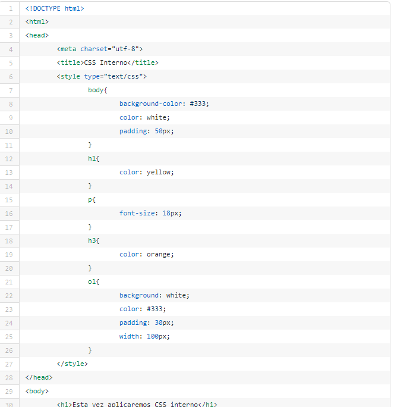
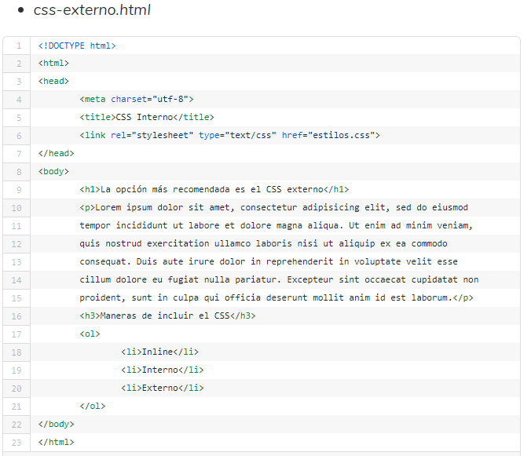
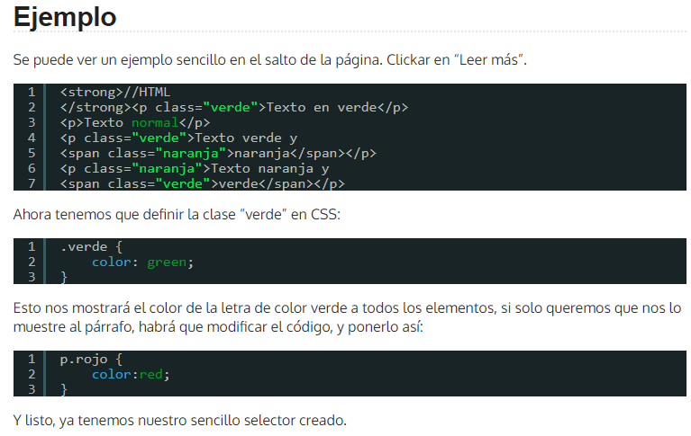

CSS3: Estilos internos y externos, selectores CSS
Objetivo del Sitio:
La Universidad Nacional a Distancia requiere los servicios de la empresa HtmlDesign, para diseñar 1 OVA - OVI.
Objetivo General:
Definir contenido de OVA - OVI CSS3.
Objetivos Específicos:
Definición de contenido de Estilos internos.
Definición de contenido de Estilos Externos.
Definición de contenido de Selectores CSS.
Materiales:
Estructura del código HTML5
Lista de Elementos HTML5
HTML5 y CSS3
Manual de CSS 3
HTML5-CSS3
CSS3
Cómo aprender y usar CSS
CSS Tutorial
Estilos HTML con CSS
CSS Inline, Interno y Externo
Estilos internos
CSS: interno y externo
Página Web Profesional con HTML5 y CSS3. Creación de HTML
Diseña un Sitio Completo con HTML5 y CSS3 Parte 1, 2, 3
Curso de HTML5 y CSS3 desde cero, Parte #1, 2, 3
Introducción a CSS3 básico desde cero - Parte 1, 2, 3, 4, 5
Crea una Página Web en HTML5 y CSS - Parte 1 a 15
Selectores básicos
Selectores CSS
CSS 3: Selectores
Selectores Básicos en CSS
HTML y CSS - Selectores de clase CSS
Contenido:
Conceptos Básicos:
CSS Interno: Etiqueta "style", el código se escribe en una etiqueta style en el documento HTML.

CSS Externo: Etiqueta "link", el código se escribe en un archivo .css a parte. Método más habitual.

¿Qué es un selector CSS?
Un selector CSS es un conjunto de reglas por las que podemos dar estilo a cualquier elemento de nuestro HTML.
¿Para qué sirve?
Nos permitirá dar clase a cualquier elemento HTML, teniendo así un montón de opciones para personalizar dicho elemento, ya que CSS es muy flexible.

Maquetación: